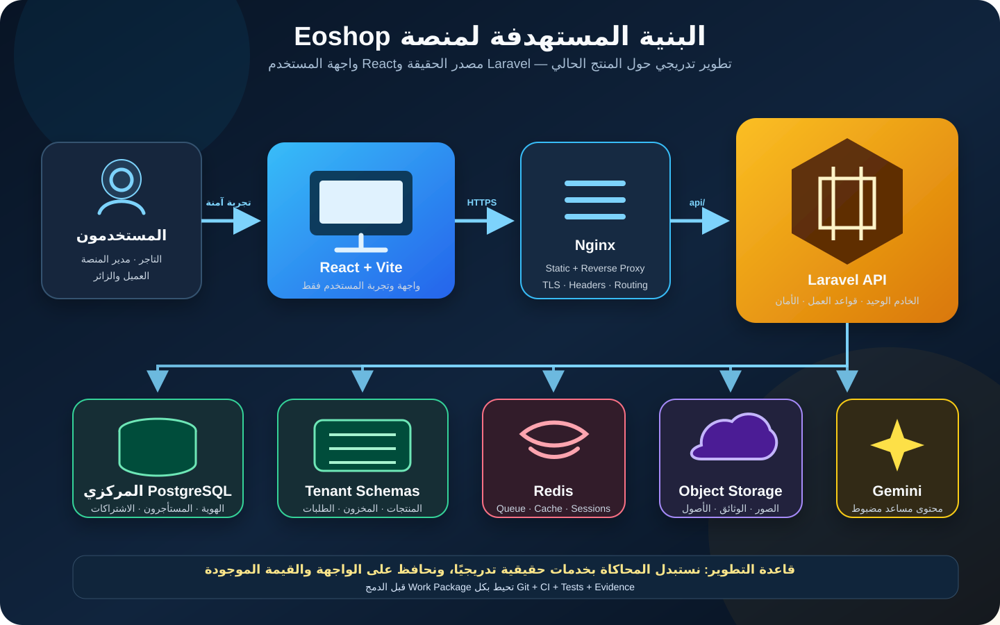

الملخص التنفيذي
نجحت النسخة الحالية في تحويل فكرة Eoshop إلى تجربة مرئية غنية. يمكن للتاجر اختيار قالب، توليد هوية بالذكاء الاصطناعي، تخصيص متجره ومعاينته. المطلوب الآن ليس هدم هذا العمل، بل بناء عمود فقري هندسي موثوق حوله.
Phase └─ Work Package ├─ Implementation ├─ Gates ├─ Evidence └─ Commit / PR / CI / Merge
رؤية المنتج
تمكين صاحب المتجر الصغير—خصوصًا في اليمن والأسواق ذات التبني الرقمي المحدود—من الانتقال من البيع عبر التواصل الاجتماعي إلى متجر رقمي منظم، دون تعقيد المنصات العملاقة.
البنية المستهدفة

صورة SVG مستقلة عالية الدقة ومناسبة للعرض والطباعة.
العمود الفقري
- React وVite للواجهة فقط.
- Nginx للتقديم والتوجيه والحماية الطرفية.
- Laravel API خادم وحيد ومصدر الحقيقة.
- PostgreSQL مركزي مع Schema مستقل لكل متجر في MVP.
الخدمات المساندة
- Redis للصفوف والكاش والجلسات.
- Object Storage للصور والوثائق.
- Gemini خلف Laravel مع حدود ومراقبة.
- Node أداة بناء، وليس خادم أعمال موازيًا.
المبادئ الحاكمة
0خط الأساس والتشغيل الموحد
WP 0.1 — Baseline آمن
Implementation: إدخال المشروع تحت Git، ضبط الاستثناءات، فحص الأسرار، إنشاء Baseline Commit وREADME.
Evidence: Git status، نتيجة فحص الأسرار، قائمة الملفات المتتبعة ومعرف الـCommit.
WP 0.2 — خادم واحد
Implementation: Laravel API هو الخادم الوحيد؛ توحيد Gemini داخله؛ Node للبناء فقط؛ تثبيت الإصدارات وتوحيد `/api` في كل البيئات.
WP 0.3 — CI وبوابة الجودة
فحص TypeScript وPHP، اختبارات أساسية، تدقيق الاعتمادات، Docker والمهاجرات، ومنع الدمج عند فشل CI.
1الهوية والمصادقة والصلاحيات
WP 1.1 — الهوية المركزية
إنشاء المستخدمين والأدوار والصلاحيات وعلاقة المستخدم بالمتجر وسجل العمليات الإدارية.
WP 1.2 — مصادقة التاجر
تسجيل ودخول وخروج واستعادة كلمة المرور بجلسة آمنة، ودمج حالات المستخدم المتكررة في مصدر واحد.
WP 1.3 — حماية الإدارة
إزالة الدخول الوهمي، حماية المسارات، Policies وسجل تدقيق للقبول والرفض والتعليق والتعديل.
2دورة حياة المتجر والمستأجر
WP 2.1 — Tenancy والترحيلات
تسجيل مسارات المستأجر فعليًا، توحيد صيغة النطاق، ربط migrations المركزية والخاصة بالمستأجر، وتوثيق Schema-per-tenant.
WP 2.2 — Provisioning احترافي
نقل التهيئة إلى Job قابل لإعادة المحاولة وIdempotent، مع سجل خطوات وتعويض آمن عند الفشل.
draft → submitted → approved → provisioning → active
↘ rejected
active → suspended
provisioning → failed → retryingWP 2.3 — النطاق والباقات
تحقق وحجز حقيقيان، ربط الباقة بالمستأجر، وفصل طلب النشر عن اكتمال التفعيل.
3توصيل الواجهة بالخلفية
WP 3.1 — API Client موحد
عقود وDTOs وTypes ومعالجة مركزية للأخطاء والجلسة وإعادة المحاولة.
WP 3.2 — استبدال localStorage
- الهوية والجلسة.
- بيانات المتجر.
- إعدادات التصميم.
- المنتجات والمخزون.
- لوحة الإدارة.
- النطاق والاشتراك.
WP 3.3 — الحفاظ على تجربة الواجهة
Adapters وFeature Flags دون إعادة تصميم الشاشات أثناء تحويل العمليات.
4نواة التجارة والطلبات
WP 4.1 — المنتجات والأسعار
SKU، حالة نشر، عملة، سعر أساسي وعرض وصور مخزنة بطريقة سليمة.
WP 4.2 — المخزون
Inventory movements، حماية التزامن، منع السالب وسجل كامل للحركات.
WP 4.3 — الطلبات
يعيد الخادم حساب السعر والخصم والشحن والرسوم، ويستخدم Snapshot وIdempotency وسجل حالات.
WP 4.4 — السوق المحلي
الدفع عند الاستلام، التحويل البنكي، المحافظ المحلية، إثبات التحويل وإشعارات واتساب.
5التفكيك المنظم للواجهة
لا Refactor شامل. كل ملف نلمسه لتنفيذ وظيفة حقيقية نفصل منه الجزء المرتبط بهذه الوظيفة فقط.
src/ ├─ app/ ├─ features/ │ ├─ auth/ │ ├─ store-builder/ │ ├─ catalog/ │ ├─ inventory/ │ ├─ checkout/ │ ├─ tenancy/ │ └─ platform-admin/ ├─ components/ ├─ api/ ├─ hooks/ ├─ schemas/ └─ types/
6التشغيل والأداء والتوسع
الربط المستقبلي بالإعلانات الاجتماعية
يُنفذ كـBounded Context مستقل بعد استقرار المنتجات والطلبات:
Product └─ Social Listing ├─ Platform ├─ Post / Ad URL ├─ Campaign Metadata ├─ Tracking Code ├─ Landing Link └─ Attribution / Orders
- رابط منتج سريع وصالح للمشاركة.
- رابط متتبع لكل منشور أو إعلان.
- توليد نص وصورة مقترحين بالذكاء الاصطناعي.
- نشر يدوي منظم أولًا.
- قياس الزيارات والطلبات المنسوبة.
- تكامل مباشر مع APIs المنصات لاحقًا.
طبقة الضمان T0–T5
| المستوى | الغرض | المخرجات |
|---|---|---|
| T0 — Scope & Baseline | تحديد النطاق والحالة ومعايير القبول | Baseline، مخاطر، Acceptance Criteria |
| T1 — Design | تصميم التغيير قبل التنفيذ | ADR، عقود، بيانات، Threat Model، Rollback |
| T2 — Implementation | أصغر تغيير مكتمل | كود محدود وتوافق أو Feature Flag |
| T3 — Verification | إثبات صحة الوظيفة | Unit، Integration، Feature، Negative Tests |
| T4 — Operational Gate | الأمن والتشغيل والبيانات | Security، migrations، rollback، performance |
| T5 — Release Evidence | تجهيز الإصدار والدمج | Evidence، توثيق، CI، PR ومراجعة |
ترتيب التنفيذ الإلزامي
- Baseline وGit.
- تثبيت Laravel كخادم واحد.
- CI وبوابات الجودة.
- الهوية والصلاحيات.
- Tenancy ودورة حياة المتجر.
- ربط الواجهة بالخادم.
- الطلبات والتسعير والمخزون.
- التفكيك التدريجي أثناء العمل.
- الأداء والتوسع والتشغيل المتقدم.
- الربط الاجتماعي بعد استقرار المنتج وقابلية التتبع.
تعريف النجاح
تنجح الخطة عندما يتحول Eoshop من نموذج يعمل داخل متصفح واحد إلى منتج موثوق دون خسارة تجربة المستخدم الحالية أو إيقاف التطوير طويلًا.
- هوية وصلاحيات لا يمكن تجاوزها من المتصفح.
- متجر يُنشأ ويُفعّل ويُستعاد بطريقة قابلة للتدقيق.
- بيانات متسقة من أي جهاز مصرح له.
- طلب لا يمكن التلاعب بسعره أو مخزونه.
- كل تغيير يمر عبر Gates وEvidence وCI.
- أساس يسمح بالربط الاجتماعي والدفع والتوسع دون إعادة هدم النظام.